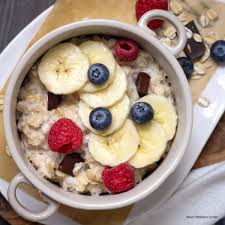

Home
Hearty Fruit Oatmeal

Want a healthy start to the morning? Try this recipe out!
Quick, easy and healthy, ready in 10 minutes!
Csutomizable with any type of fruit on hand! Strawberries, raspberries, banana, whatever!
Even better with frozen fruit, which is also cheaper
Ingredients:
- 45 grams Oats
- 200 ml Milk of your choice
- 100 grams Fruit of your choice
- 1 tsp Chia Seeds
- Dash of Salt
Steps:
- Combine the Oats, Milk, Chia Seeds, and Salt in a bowl
- Microwave on high for 3 minutes
- Add the fruit as a topping
- If the fruit is frozen, microwave again for 1 minutes, otherwise continue
- Enjoy!